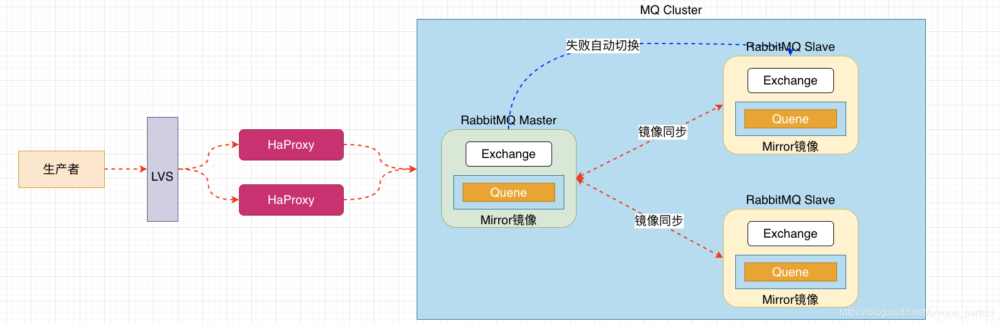

引言
什么是MQ
MQ（Message Quene）：消息队列，通过典型的生产者和消费者模型不断向消息队列中生产消息，消费者不断从队列中获取消息。因为消息的生产和消费是异步的，而且只关系消息的发送和接收，没有业务逻辑的侵入，轻松地实现系统间解耦。别名为消息中间件，通过利用高效可靠的消息传递机制进行平台无关的数据交流，并给予数据通信进行分布式系统的集成。
AMQP协议
AMQP（advanced message queuing protocol）在2003年时被提出，最早用于解决金融领不同平台之间的消息传递交互问题。顾名思义，AMQP是一种协议，更准确的说是一种binary wire-level protocol（链接协议）。这是其和JMS的本质差别，AMQP不从API层进行限定，而是直接定义网络交换的数据格式。这使得实现了AMQP的provider天然性就是跨平台的。以下是AMQP协议模型:
不同MQ特点：
- ActiveMQ：是Apache出品，是最流行，能力强劲的开源消息总线。它是一个完全支持JMS规范的消息中间件。有丰富的API，多种集群架构模式让ActiveMQ称为老牌成熟的消息中间件，中小企业使用广泛
- Kafka：是LinkedIn开源的分布式发布-订阅消息系统，目前属于Apache顶级项目。主要特点是基于Pull的模式处理消息消费，追求吞吐量。一开始的目的就是用于日志收集和传输，0.8版本之后开始支持复制，不支持事务，对消息的重复、丢失、错误没有严格要求，适合产生大量数据的互联网服务的数据收集业务
- RocketMQ：是阿里开源的消息中间件，纯java开发，具有高吞吐量、高可用性、适合大规模分布式系统应用的特点。RocketMQ起源于Kafka，对消息的可靠传输及事务性做了优化，在阿里被广泛用于交易、充值、流计算、消息推送、日志流式处理、binglog分发等场景
- RabbitMQ：使用Erlang语言开发的消息队列系统。基于AMQP协议来实现。主要特征是面向消息、队列、路由(包括点对点和发布/订阅)、可靠性、安全。AMQP协议更多用在企业系统内对数据一致性、稳定性和可靠性要求很高的场景，对性能和吞吐量的要求在其次。
RabbitMQ比Kafka更可靠，Kafka更适合IO高吞吐的处理，一般应用在大数据日志处理或对实时性(少量延迟)，可靠性(少量丢失数据)要求稍低的场景使用，比如ELK日志收集
RabbitMQ安装
RabbitMQ下载 (注意与erlang版本对应关系)
# 1.将安装包上传到服务器
erlang-23.3.1-1.el7.x86_64.rpm
rabbitmq-server-3.8.13-1.el7.noarch.rpm
# 2.安装erlang依赖包
yum install -y erlang-23.3.1-1.el7.x86_64.rpm
# 3.安装rabbitmq
yum install -y rabbitmq-server-3.8.13-1.el7.noarch.rpm
# 4.配置文件
#见下方配置文件说明
# 5.修改配置文件
loopback_users.guest = false
# 6.启动rabbitmq中的插件管理
rabbitmq-plugins enable rabbitmq_management
# 7.启动rabbitmq
systemctl start rabbitmq-server # 启动rabbitmq服务
systemctl restart rabbitmq-server # 重启服务
systemctl stop rabbitmq-server # 停止服务
# 8.查看rabbitmq状态
systemctl status rabbitmq-server
# 9.访问rabbitmq的web管理界面
#开放端口访问
firewall-cmd --add-port=15672/tcp --permanent
firewall-cmd --reload
http://192.168.232.134:15672/ #访问
# 10.初始登录
guest guest
rabbitmq-server-3.8.13配置文件
安装之后/etc/rabbitmq/目录下没有rabbitmq的配置文件，在/usr/share/doc/rabbitmq-server-3.8.13/目录下也没有提供配置文件模板
可以到github上下载将其拷贝到目录下
https://github.com/rabbitmq/rabbitmq-server/tree/v3.8.x/deps/rabbit/docs
因为没有多少配置，此处直接在/etc/rabbitmq/目录下新建rabbit.conf，添加
loopback_users.guest = false我个人使用这个：https://blog.csdn.net/weixin_40584261/article/details/106826044
登录成功显示：
RabbitMQ配置
web界面连接rabbitmq端口：15672
java连接rabbitmq端口：5672
RabbitMQ管理命令行
# 1,服务启动相关
systemctl start | restart | stop | status rabbitmq-server
#2,管理命令行 用来在不适用web管理界面情况下操作RabbitMQ
rabbitmq help 可以查看更多命令
#3，插件管理命令行
rabbitmq-plugins enable | list | disableweb管理界面介绍
导航栏介绍
常见概念：
Server(broker): 接受客户端连接，实现AMQP消息队列和路由功能的进程。
Virtual Host：虚拟主机，类似于权限控制组，一个Virtual Host里面可以有若干个Exchange和Queue，但是权限控制的最小粒度是Virtual Host
Connections：无论生产者还是消费者，都需要与RabbitMQ建立连接后才能完成消息的生产和消费，在这里可以查看连接情况。对于RabbitMQ而言，其实就是一个位于客户端和Broker之间的TCP连接。
Channels：通道，建立连接后会形成通道，消息的传递获取依赖于通道
Exchanges：交换机，用来实现消息的路由。接收生产者发送的消息，并根据一定规则将消息路由给服务器中的队列
Message Queues：消息队列，消息存放在队列中，等待消费，消费后被移除队列
Message：由Header和Body组成。Header是由生产者添加的各种属性的集合，包括Message是否被持久化、由哪个Message Queue接受、优先级是多少等。而Body是真正需要传输的APP数据。
Admin用户管理和虚拟主机管理
创建用户
Tags选项用户可选类型
- Admin：超级管理员，可登录管理控制台，可查看所有信息，并且可以对用户，策略(policy)进行操作
- Monitoring：监控者，可登陆管理控制台，同时可以查看rabbitmq节点的相关信息(进程数，内存使用情况，磁盘使用情况等)
- Policymaker：策略制定者，可登陆管理控制台, 同时可以对policy进行管理。但无法查看节点的相关信息(上图红框标识的部分)
- Management：普通管理者， 仅可登陆管理控制台，无法看到节点信息，也无法对策略进行管理
- 其他：无法登陆管理控制台，通常就是普通的生产者和消费者。
创建虚拟主机
为了让各个用户可以互不干扰的工作，RabbitMQ添加了虚拟主机（Virtual Hosts）的概念。其实就是一个独立的访问路径，不同用户使用不同路径，各自有自己的队列、交换机，互相不会影响。
绑定虚拟主机和用户
RabbitMQ支持的消息模型
添加端口访问：
firewall-cmd —add-port=5672/tcp —permanent
firewall-cmd —add-port=15672/tcp —permanent
firewall-cmd —reload
firewall-cmd —list-all
rabbitmq依赖
<dependency>
<groupId>com.rabbitmq</groupId>
<artifactId>amqp-client</artifactId>
<version>5.11.0</version>
</dependency>第一种模型（直连）
在上图的模型中，有以下概念：
- P:生产者，也就是要发送消息的程序
- C:消费者：消息的接收者，会一直等待消息的到来
- queue:消息队列，图中红色的部分，类似一个邮箱，可以缓存消息；生产者向其中投递消息，消费者从其中取出消息。
1.开发生产者
//创建连接mq的连接工厂对象
ConnectionFactory connectionFactory = new ConnectionFactory();
//设置连接rabbitmq的主机
connectionFactory.setHost("192.168.200.130");
//设置端口号
connectionFactory.setPort(5672);
//设置连接哪个虚拟主机
connectionFactory.setVirtualHost("/ems");
//设置访问虚拟主机的用户名和密码
connectionFactory.setUsername("ems");
connectionFactory.setPassword("123");
Connection connection = connectionFactory.newConnection();
//创建通道
Channel channel = connection.creatChannel();
/*
* 通道绑定对应的消息队列
* 参数一：queue 队列名称，如果队列不存在自动创建
* 参数二：durable 用来定义队列特性是否要持久化 true 持久化队列 false 不持久化
* 参数三：exclusive 是否独占队列 true 独占 false 不独占
* 参数四：autoDelete 是否在消费完成后自动删除队列， true 自动删除 false 不自动删除
* 参数五：arguments 额外附加参数
*/
channel.queueDeclare("hello",false,false,false,null);
/*
*发布消息
* 参数1； exchange 交换机名称
* 参数2： routinqKey 队列名称
* 参数3：传递消息额外设置
* 参数4：消息的具体内容
*/
channel.basicPublish("","hello",null,"hello rabbitmq".getBytes());
//将队列中的消息持久化
channel.basicPublish("","hello", MessageProperties.PERSISTENT_TEXT_PLAIN,"hello rabbitmq".getBytes());2.开发消费者
//创建连接mq的连接工厂对象
ConnectionFactory connectionFactory = new ConnectionFactory();
//设置连接rabbitmq的主机
connectionFactory.setHost("192.168.200.130");
//设置端口号
connectionFactory.setPort(5672);
//设置连接哪个虚拟主机
connectionFactory.setVirtualHost("/ems");
//设置访问虚拟主机的用户名和密码
connectionFactory.setUsername("ems");
connectionFactory.setPassword("123");
Connection connection = connectionFactory.newConnection();
//创建通道
Channel channel = connection.creatChannel();
/*
* 通道绑定对应的消息队列
* 参数一：queue 队列名称，如果队列不存在自动创建
* 参数二：durable 用来定义队列特性是否要持久化 true 持久化队列 false 不持久化
* 参数三：exclusive 是否独占队列 true 独占 false 不独占
* 参数四：autoDelete 是否在消费完成后自动删除队列， true 自动删除 false 不自动删除
* 参数五：arguments 额外附加参数
*/
channel.queueDeclare("hello",false,false,false,null);
/*
*消费消息
* 参数1：消费那个队列的消息 队列名称
* 参数2：开始消息的自动确认机制
* 参数3：消费时的回调接口
*/
channel.basicConsume("hello",true,new DefaultConsumer(channel){
//最后一个参数：消息队列中取出的消息
@Override
public void handleDelivery(String consumerTag, Envelope envelope, AMQP.BasicProperties properties, byte[] body) throws IOException {
System.out.println("new String(body) = "+new String(body));
}
});3,参数的说明
/*
* 通道绑定对应的消息队列
* 参数一：queue 队列名称，如果队列不存在自动创建
* 参数二：durable 用来定义队列特性是否要持久化 true 持久化队列 false 不持久化
* 参数三：exclusive 是否独占队列 true 独占 false 不独占
* 参数四：autoDelete 是否在消费完成后自动删除队列， true 自动删除 false 不自动删除
* 参数五：arguments 额外附加参数
*/
channel.queueDeclare("hello",false,false,false,null);第二种模型（work queue）
Work queues ，也被称为（Task queues），任务模型。当消息处理比较耗时的时候，可能生产消息的速度会远远大于消息的消费速度。长此以往，消息就会堆积越来越多，无法及时处理。此时可以使用work模型：让多个消费者绑定到一个队列，共同消费队列中的消息。队列中的消息一旦消费，就会消失，因此任务是不会被重复执行的。
角色：
- P:生产者：任务的发布者
- C1:消费者：领取任务并且完成任务，假设完成任务速度较慢
- C2:消费者2：领取任务并且完成任务，假设完成速度快
1.开发生产者
channel.queueDeclare("hello",true,false,false,null);
for(int i = 0;i < 10;i ++){
channel.basicPublish("","hello",null,(i+"====>:MSG").getBytes());
}2.开发消费者-1
channel.queueDeclare("hello",true,false,false,null);
channel.basicConsume("work",true,new DefaultConsumer(channel){
@Override
public void handleDelivery(String consumerTag, Envelope envelope, AMQP.BasicProperties properties, byte[] body) throws IOException {
System.out.println("消费者-1："+new String(body));
}
});3.开发消费者-2
channel.queueDeclare("hello",true,false,false,null);
channel.basicConsume("work",true,new DefaultConsumer(channel){
@Override
public void handleDelivery(String consumerTag, Envelope envelope, AMQP.BasicProperties properties, byte[] body) throws IOException {
System.out.println("消费者-1："+new String(body));
}
});4,测试结果
总结：默认情况下，RabbitMQ将按顺序将每个消息发送给下一个使用者。平均而言，每个消费者都会收到相同数量的消息。这种分发消息的方式称为循环。
5,消息自动确认机制
Doing a taskcan tale a few seconds.Ylou may wonder what happens if one of the consumers starts a longtask and dies with itonly partly done. .ith our curent code, once
Rabitue delvesamessageto the consume it imeditely marks it fordeleton. n thiscase,f y il aworker we il lose the message itwas just processing W ell alse lose al themessages that were dispatched to this particular worker but were not yet handled.
But we don’t want to lose any tasks. If a worker dies, we’d like the task to be delivered to another worker.
channel.basicQos(1); //一次只接受一条未确认的消息
//参数2：关闭自动确认消息
channel.basicConsume("hello",true,new DefaultConsumer(channel){
@Override
public void handleDelivery(String consumerTag, Envelope envelope, AMQP.BasicProperties properties, byte[] body) throws IOException {
System.out.println("消费者-1："+new String(body));
channel.basicAck(envelope.getDeliveryTag(),false); //手动确认消息
}
});- 这是通道一次只能消费一个消息
- 关闭消息的自动确认。开启手动确认消息。
第三种模型（fanout）
fanout 也称为广播Putting it all together
在广播模式下，消息发送流程是这样的：
- 可以有多个消费者。
- 每个消费者有自己的queue（队列）。
- 每个队列都要绑定到Exchange（交换机）。
- 生产者发送的消息，只能发送到交换机，交换机来决定要发给哪个队列，生产者无法决定。
- 交换机把消息发送给绑定过的所有队列。
- 队列的消费者都能拿到消息。实现一条消息被多个消费者消费。
1,开发生产者
//声明交换机
channel.exchangeDeclare("logs","fanout"); //广播 一条消息多个消费者同时消费
//发布消息
channel.basicPublish("logs","",null,"hello".getBytes());2.开发消费者 -1
//通道绑定交换机
channel.exchangeDeclare("logs","fanout");
//临时队列
String queueName = channel.queueDeclare().getQueue();
//绑定交换机和队列
channel.queueBind(queueName,"logs","");
//消费消息
channel.basicConsume(queueName,true,new DefaultConsumer(channel){
@Override
public void handleDelivery(String consumerTag, Envelope envelope, AMQP.BasicProperties properties, byte[] body) throws IOException {
System.out.println("Consumer 1 "+new String(body));
}
});3.开发消费者 -2
//通道绑定交换机
channel.exchangeDeclare("logs","fanout");
//临时队列
String queueName = channel.queueDeclare().getQueue();
//绑定交换机和队列
channel.queueBind(queueName,"logs","");
//消费消息
channel.basicConsume(queueName,true,new DefaultConsumer(channel){
@Override
public void handleDelivery(String consumerTag, Envelope envelope, AMQP.BasicProperties properties, byte[] body) throws IOException {
System.out.println("Consumer 1 "+new String(body));
}
});4,开发消费者-3
//通道绑定交换机
channel.exchangeDeclare("logs","fanout");
//临时队列
String queueName = channel.queueDeclare().getQueue();
//绑定交换机和队列
channel.queueBind(queueName,"logs","");
//消费消息
channel.basicConsume(queueName,true,new DefaultConsumer(channel){
@Override
public void handleDelivery(String consumerTag, Envelope envelope, AMQP.BasicProperties properties, byte[] body) throws IOException {
System.out.println("Consumer 1 "+new String(body));
}
});5,测试结果

第四种模型（route）
1,Routing之订阅模型-Direct
在Fanout模式中，一条消息，会被所有订阅的队列消费。但是，在某种场景下，我们希望不同的消息被不同的队列消费。这是就要用到Direct类型的Exchange。在Direct模型中：
队列与交换机的绑定，不能是任意绑定了，而是指定一个RoutingKey（路由Key）。
消息的发送方在向Exchange发送消息时，也必须指定消息的RoutingKey。
Exchange不再把消息交给每一个绑定的队列，而是根据消息的RoutingKey进行判断，只有队列的RoutingKey与消息的RoutingKey完全一致，才会接收到消息。
流程：
图解：
- P：生产者，向Exchange发送消息，发送消息时，会指定一个routing key。
- X: Exchange(交换机)，在接收生产者的消息，然后把消息递交给routing key完全匹配的队列。
- C1:消费者，其所在队列指定了需要routing key为error的消息
- C2:消费者，其所在队列指定了需要routing key为info、error、warning的消息
1,开发生产者
//声明交换机 参数1：交换机名称 参数2：交换机类型 基于指令的RoutingKey转发
channel.exchangeDeclare("logs_direct","direct");
String key = "";
#发布消息
channel.basicPublish("logs_direct",key,null,("指定的route key"+key+"的消息").getBytes());2,开发消费者-1
//通过通道去声明交换机以及交换的类型
channel.exchangeDeclare("logs_direct","direct");
//创建一个临时队列
String queue = channel.queueDeclare().getQueue();
//基于route key 绑定队列和交换机
channel.queueBind(queue,"logs_direct","error");
///获取消费的信息
channel.basicConsume(queue,true,new DefaultConsumer(channel){
@Override
public void handleDelivery(String consumerTag, Envelope envelope, AMQP.BasicProperties properties, byte[] body) throws IOException {
System.out.println("Consumer 1 "+new String(body));
}
});3,开发消费者-2
//通过通道去声明交换机以及交换的类型
channel.exchangeDeclare("logs_direct","direct");
//创建一个临时队列
String queue = channel.queueDeclare().getQueue();
//基于route key 绑定队列和交换机
channel.queueBind(queue,"logs_direct","error");
channel.queueBind(queue,"logs_direct","info");
channel.queueBind(queue,"logs_direct","warning");
///获取消费的信息
channel.basicConsume(queue,true,new DefaultConsumer(channel){
@Override
public void handleDelivery(String consumerTag, Envelope envelope, AMQP.BasicProperties properties, byte[] body) throws IOException {
System.out.println("Consumer 2 "+new String(body));
}
});4,测试结果
发布info消息

发布error消息

发布没有绑定的
第五种模型 Routing之订阅模式-Topic
Topic类型的Exchange与Direct相比，都是可以根据Routingkey把消息路由到不同的队列。只不过Topic类型Exchange可以让队列在绑定Routing key 的时候使用通配符!这种模型Routingkey一般都是由一个或多个单词组成，多个单词之间以””分割，例如: item.insert
# 通配符
* (star) can substitute for exactly one word 匹配不多不少恰好一个单词
* (hash) can substitute for zero or more word 匹配一个或多个词
# 如
audit.# 匹配audit.irs.corporate 或者audit.irs等
audit.* 只能匹配audit.irs1,开发生产者
//生命交换机和交换机类型 topic 使用动态路由（通配符方式）
channel.exchangeDeclare("topics","topic");
String routeKey = "user.save"; //动态路由2，开发消费者-1
//声明交换机以及交换类型 topic
channel.exchangeDeclare("topics","topic");
//创建一个临时队列
String queue = channel.queueDeclare().getQueue();
//绑定队列和交换机 动态通配符形式route key
channel.queueBind(queue,"topics","user.*");
//消费消息
channel.basicConsume(queue,true,new DefaultConsumer(channel){
@Override
public void handleDelivery(String consumerTag, Envelope envelope, AMQP.BasicProperties properties, byte[] body) throws IOException {
System.out.println("Consumer 1 :" + new String(body));
}
});3,开发消费者-2
//声明交换机以及交换类型 topic
channel.exchangeDeclare("topics","topic");
//创建一个临时队列
String queue = channel.queueDeclare().getQueue();
//绑定队列和交换机 动态通配符形式route key
channel.queueBind(queue,"topics","user.#");
//消费消息
channel.basicConsume(queue,true,new DefaultConsumer(channel){
@Override
public void handleDelivery(String consumerTag, Envelope envelope, AMQP.BasicProperties properties, byte[] body) throws IOException {
System.out.println("Consumer 2 :" + new String(body));
}
});封装工具类
public class RabbitMqUtils {
private static ConnectionFactory connectionFactory;
static {
//重量级资源，类加载执行h之后执行一次。
connectionFactory = new ConnectionFactory();
//设置连接rabbitmq的主机
connectionFactory.setHost("192.168.200.130");
//设置端口号
connectionFactory.setPort(5672);
//设置连接哪个虚拟主机
connectionFactory.setVirtualHost("/ems");
//设置访问虚拟主机的用户名和密码
connectionFactory.setUsername("ems");
connectionFactory.setPassword("123");
}
//定义提供连接对象的方法
public static Connection getConnection(){
try {
return connectionFactory.newConnection();
} catch (Exception e) {
e.printStackTrace();
}
return null;
}
//关闭通道和关闭连接工具方法
public static void closeConnectionAndChannel(Channel channel, Connection connection){
try {
if(channel != null){
channel.close();
}
if(connection != null){
connection.close();
}
} catch (Exception e) {
e.printStackTrace();
}
}
}Springboot 集成 RabbitMQ
搭建初始环境
1,引入依赖
<!--rabbitmq 集成的依赖-->
<dependency>
<groupId>org.springframework.boot</groupId>
<artifactId>spring-boot-starter-amqp</artifactId>
</dependency>2,配置配置文件
spring:
rabbitmq:
host: 192.168.200.130
port: 5672
username: ems
password: 123
virtual-host: /ems//注入rabbitmqTemplate
@Autowired
private RabbitTemplate rabbitTemplate;
//hello world
@Test
public void testHelloWorld(){
rabbitTemplate.convertAndSend("hello","hello world");
}@Component
@RabbitListener(queuesToDeclare = @Queue(value = "hello",durable = "false",autoDelete = "true"))
public class helloCustomer {
@RabbitHandler
public void receivel(String message){
System.out.println("message = "+message);
}
}//注入rabbitmqTemplate
@Autowired
private RabbitTemplate rabbitTemplate;
//work 模型
@Test
public void testWork(){
for (int i = 0; i < 10; i++) {
rabbitTemplate.convertAndSend("work","work 模型！");
}
}@Component
public class Consumer {
//一个消费者
@RabbitListener(queuesToDeclare = @Queue("work"))
public void receive1(String message){
System.out.println("message1 : "+message);
}
//一个消费者
@RabbitListener(queuesToDeclare = @Queue("work"))
public void receive2(String message){
System.out.println("message2 : "+message);
}
}//注入rabbitmqTemplate
@Autowired
private RabbitTemplate rabbitTemplate;
//fanout 广播
@Test
public void testFanout(){
rabbitTemplate.convertAndSend("logs","","fanout 模型！");
}@Component
public class FanoutCustomer {
@RabbitListener(bindings = {
@QueueBinding(
value = @Queue, //创建临时队列
exchange = @Exchange(value = "logs",type = "fanout") //绑定的交换机
)
})
public void receive1(String message){
System.out.println("message1 : "+message);
}
@RabbitListener(bindings = {
@QueueBinding(
value = @Queue, //创建临时队列
exchange = @Exchange(value = "logs",type = "fanout") //绑定的交换机
)
})
public void receive2(String message){
System.out.println("message2 : "+message);
}
}
//注入rabbitmqTemplate
@Autowired
private RabbitTemplate rabbitTemplate;
// route 路由模式
@Test
public void testRoute(){
rabbitTemplate.convertAndSend("directs","error","发送info的key 的路由信息！");
}@Component
public class RouteCustomer {
@RabbitListener(bindings = {
@QueueBinding(
value = @Queue, //创建临时队列
exchange = @Exchange(value = "directs",type = "direct"), //指定交换机名称和类型
key = {"info","error","warn"}
)
})
public void receive1(String message){
System.out.println("message1 : "+message);
}
@RabbitListener(bindings = {
@QueueBinding(
value = @Queue, //创建临时队列
exchange = @Exchange(value = "directs",type = "direct"), //指定交换机名称和类型
key = {"error"}
)
})
public void receive2(String message){
System.out.println("message2 : "+message);
}
}//注入rabbitmqTemplate
@Autowired
private RabbitTemplate rabbitTemplate;
// route 动态路由 订阅模式
@Test
public void testTopic(){
rabbitTemplate.convertAndSend("topics","user","user.save 的路由信息！");
}@Component
public class TopicCustomer {
@RabbitListener(bindings = {
@QueueBinding(
value = @Queue,
exchange = @Exchange(name = "topics",type = "topic"),
key = {"user.save","user.*"}
)
})
public void receive1(String message){
System.out.println("message 1 : "+message);
}
@RabbitListener(bindings = {
@QueueBinding(
value = @Queue,
exchange = @Exchange(name = "topics",type = "topic"),
key = {"order.#","produce.*","user.*"}
)
})
public void receive2(String message){
System.out.println("message 2 : "+message);
}
}- 串行方式：将注册信息写入数据库后，发送注册邮件，再发送注册短信，以上三个任务全部完成后才返回给客户端。这有一个问题是，邮件，短信并不是必须的，它只是一个通知，而这种做法让客户端等待没有必要等待的东西。
- 并行方式：将注册信息写入数据库后，发送邮件的同时，发送短信，以上三个任务完成后，返回给客户端，并行的方式能提高处理的事件。
- 消息队列：·假设三个业务节点分别使用50ms，串行方式使用时间150ms，并行使用时间100ms。虽然并行已经提高的处理时间,但是前面说过邮件和短信对我正常的使用网站没有任何影响，客户端没有必要等着其发送完成才显示注册成功应该是写入数据库后就返回．消息队列：引入消息队列后，把发送邮件短信不是必须的业务逻辑异步处理
由此可以看出，引入消息队列后，用户的响应时间就等于写入数据库的时间+写入消息队列的时间（可以忽略不计），引入消息队列后处理后，响应时间是串行的三倍，是并行的两倍。
应用解耦
场景：双十一，用户下单后，订单系统需要通知库存系统，传统的做法就是订单系统调用库存系统的接口。这种做法有一个缺点：
当库存系统出现故障时，订单就会失败。订单系统和库存系统高耦合，引入消息队列。
- 订单系统：用户下单后，订单系统完成持久化处理，将消息写入消息队列，返回用户订单下单成功。
- 库存系统：订阅下单的消息，获取下单的消息，进行库操作。就算库存系统出现故障，消息队列能保证消息的可靠投递，不会导致消息的丢失。
流量削峰
场景：秒杀活动，一般会因为流量过大，导致应用挂掉，为解决这个问题，一般在应用前端加入消息队列。 作用：- 可以控制活动人数，超过此一定阈值的订单直接丢弃。
- 可以缓解短时间的高流量压垮应用(应用程序按自己的最大处理能力获取订单)。
1，用户的请求，服务器收到之后，首先写入消息队列，假如消息队列长度超过最大值，则直接抛弃用户请求或跳转到错误页面。
2，秒杀业务根据消息队列中的请求信息，再做后续处理。
RabbiMQ的集群
集群架构
普通集群（副本集群）
默认情况下：RabbitMQ代理操作所需的所有数据/状态都将跨所有节点复制，这方面的一个例外是消息队列，默认情况下，消息队列位于一个节点上，尽管它们可以从所有节点看到和访问All data/state required for the operation of a RabbitMQ broker is replicated across all nodes. An exception to this message queues,which by default reside on one node,though they are visible and reachable from all nodes. To replicate queues across nodes in a cluster —摘自官网
1, 架构图
核心解决问题：当集群中某一时刻master节点宕机，可以对Queue中信息，进行备份。
2, 集群搭建
# 0.集群规划
node1: 192.168.200.130 mq1 master 主节点
node2: 192.168.200.131 mq2 repl1 副本节点
node3: 192.168.200.132 mq3 repl2 副本节点
# 1,克隆三台机器主机名和ip映射
vim /etc/hosts 加入：
192.168.200.130 mq1
192.168.200.131 mq2
192.168.200.132 mq3
node1: vim /etc/hostname 加入: mq1
node2: vim /etc/hostname 加入: mq2
node3: vim /etc/hostname 加入: mq3
#2,三个机器安装rabbitmq，并同步cookie文件，在node1上执行：
scp /var/lib/rabbitmq/.erlang.cookie root@mq2:/var/lib/rabbitmq/
scp /var/lib/rabbitmq/.erlang.cookie root@mq3:/var/lib/rabbitmq/
#3,查看cookie是否一致
node1: cat /var/lib/rabbitmq/.erlang.cookie
node2: cat /var/lib/rabbitmq/.erlang.cookie
node3: cat /var/lib/rabbitmq/.erlang.cookie
#4,后台启动rabbitmq所有节点执行如下命令，启动成功访问管理界面：
rabbitmq-server -detached
#5,在node2和node3执行加入集群命令：
1,关闭 rabbitmqctl stop_app
2,加入集群 rabbitmqctl join_cluster rabbit@mq1
3,启动服务 rabbitmqctl start_app
#6,查看集群状态，任意节点执行：
rabbitmqctl cluster_status
#7,如果出现如下显示，汲取搭建成功：
Cluster status of node rabbit@mq3 ...
[{nodes,[{disc,[rabbit@mq1,rabbit@mq2,rabbit@mq3]}]},
{running_nodes,[rabbit@mq1,rabbit@mq2,rabbit@mq3]},
{cluster_name,<<"rabbit@mq1">>},
{partitions,[]},
{alarms,[{rabbit@mq1,[]},{rabbit@mq2,[]},{rabbit@mq3,[]}]}]
# 8,登录管理界面，展示如下状态：测试集群在node1上，创建队列

查看node2和node3节点

关闭node1节点，执行（rabbitmqctl stop_app)，查看node2和node3
镜像集群
This guide covers mirroring (queue contents replication) of classic queues —摘自官网
By default, contents of a queue within a RabbitMQ cluster are located on a single node (the node on which the queue was declared). This is in contrast to exchanges and bindings, which can always be considered to be on all nodes. Queues can optionally be made mirrored across multiple nodes.
—摘自官网
镜像队列机制就是将队列在三个节点之间设置主从关系，消息会在三个节点之间进行自动同步，且如果其中一个节点不可用，并不会导致消息丢失或服务不可用的情况，提升MQ集群的整体高可用性。
集群架构图

配置集群架构
# 0.策略说明
rabbitmqctl set_policy [-p <vhost>] [--priority <priority>] [--apply-to <apply-to>] <name> <pattern> <definition>
-p Vhost： 可选参数，针对指定vhost下的queue进行设置
Name: policy的名称
Pattern: queue的匹配模式(正则表达式)
Definition：镜像定义，包括三个部分ha-mode, ha-params, ha-sync-mode
ha-mode:指明镜像队列的模式，有效值为 all/exactly/nodes
all：表示在集群中所有的节点上进行镜像
exactly：表示在指定个数的节点上进行镜像，节点的个数由ha-params指定
nodes：表示在指定的节点上进行镜像，节点名称通过ha-params指定
ha-params：ha-mode模式需要用到的参数
ha-sync-mode：进行队列中消息的同步方式，有效值为automatic和manual
priority：可选参数，policy的优先级
# 1.查看当前策略
rabbitmqctl list_policies
# 2.添加策略
rabbitmqctl set_policy ha-all '^hello' '{"ha-mode":"all","ha-sync-mode":"automatic"}'
说明:策略正则表达式为 “^” 表示所有匹配所有队列名称 ^hello:匹配hello开头队列
# 3.删除策略
rabbitmqctl clear_policy ha-all
# 4.测试集群